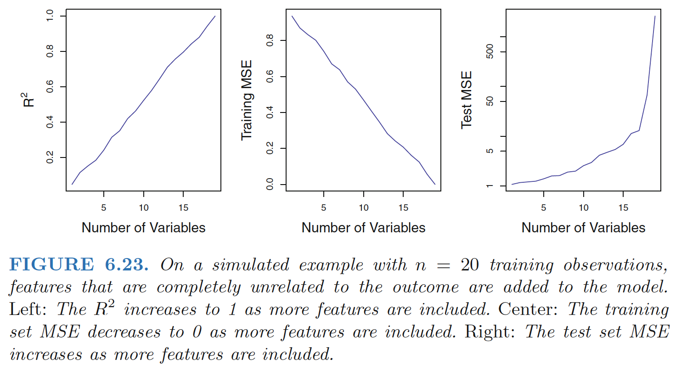

High-Dimensional Data
High-dimensional: Data sets containing more features than observations are often referred to as high-dimensional. - Classical approaches such as least squares linear highregression are not appropriate in this setting
What Goes Wrong in High Dimensions?
- When the number of features p is as large as, or >n, least squares cannot be performed.
Reason: regardless of whether or not there truly is a relationship between the features and the response, least squares will yield a set of coefficient estimates that result in a perfect fit to the data, such that the residuals are zero. - This perfect fit will almost certainly lead to overfitting of the data - The problem is simple: when p > n or p ≈ n, a simple least squares regression line is too flexible and hence overfits the data.
- Examines only the R2 or the training set MSE might erroneously conclude that the model with the greatest number of variables is best. 
Cp, AIC, and BIC approaches are not appropriate in the high-dimensional setting, because estimating ˆσ2 is problematic.(For instance, the formula for ˆσ2 from Chapter 3 yields an estimate ˆσ2 = 0 in this setting.)
Adjusted R2 in the high-dimensional setting is problematic, since one can easily obtain a model with an adjusted R2 value of 1.
Regression in High Dimensions
Alternative approaches better-suited to the high-dimensional setting:
- forward stepwise selection
- ridge regression
- the lasso
- principal components regression
Reason: these approaches avoid overfitting by using a less flexible fitting approach than least squares.
Three important points: (1) regularization or shrinkage plays a key role in high-dimensional problems,
appropriate tuning parameter selection is crucial for good predictive performance, and
the test error tends to increase as the dimensionality of the problem (i.e. the number of features or predictors) increases, unless the additional features are truly associated with the response.\(\Rightarrow\) curse of dimensionality
Curse of dimensionality
Adding additional signal features that are truly associated with the response will improve the fitted model; However, adding noise features that are not truly associated with the response will lead to a deterioration in the fitted model.
Reason: This is because noise features increase the dimensionality of the problem, exacerbating the risk of overfitting (since noise features may be assigned nonzero coefficients due to chance associations with the response on the training set) without any potential upside in terms of improved test set error.
Interpreting Results in High Dimensions
- Be cautious in reporting the results obtained when we perform the lasso, ridge regression, or other regression procedures in the high-dimensional setting.
- In the high-dimensional setting, the multicollinearity problem is extreme: any variable in the model can be written as a linear combination of all of the other variables in the model. This means that we can never know exactly which variables (if any) truly are predictive of the outcome, and we can never identify the best coefficients for use in the regression.
- Be cautious in reporting errors and measures of model fit in the high-dimensional setting
- e.g.: when p > n, it is easy to obtain a useless model that has zero residuals.
- One should never use sum of squared errors, p-values, R2 statistics, or other traditional measures of model fit on the training data as evidence of a good model fit in the high-dimensional setting
- It is important to instead report results on an independent test set, or cross-validation errors. For instance, the MSE or R2 on an independent test set is a valid measure of model fit, but the MSE on the training set certainly is not.